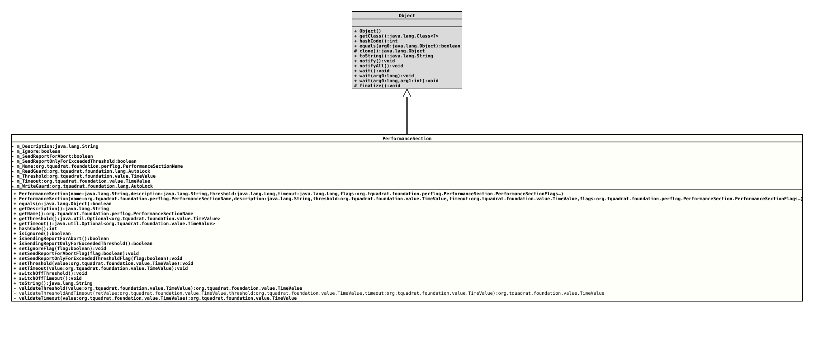

Class PerformanceSection
java.lang.Object
org.tquadrat.foundation.perflog.PerformanceSection
@ClassVersion(sourceVersion="$Id: PerformanceSection.java 1218 2026-05-02 15:17:24Z tquadrat $")
@API(status=STABLE,
since="0.25.0")
public final class PerformanceSection
extends Object
This class describes a "Performance Section".
- Author:
- Thomas Thrien (thomas.thrien@tquadrat.org)
- Version:
- $Id: PerformanceSection.java 1218 2026-05-02 15:17:24Z tquadrat $
- Since:
- 0.25.0
- UML Diagram
-

UML Diagram for "org.tquadrat.foundation.perflog.PerformanceSection"
{kind=link}
-
Nested Class Summary
Nested ClassesModifier and TypeClassDescriptionstatic enumThe ignore status for a performance section. -
Field Summary
FieldsModifier and TypeFieldDescriptionprivate final StringThe description for the performance section.private booleanThe flog that controls whether this performance section is ignored.private final PerformanceSectionNameThe unique name of the performance section.private final AutoLockThe guard for read operations.private booleanThe flag that controls whether reports for this performance section are sent in case of an abort.private booleanThe flag that controls whether reports for this performance section are sent only when the threshold was exceeded.private TimeValueThe threshold time.private TimeValueThe timeout time.private final AutoLockThe guard for write operations. -
Constructor Summary
ConstructorsConstructorDescriptionPerformanceSection(String name, String description, Long threshold, Long timeout, PerformanceSection.PerformanceSectionFlags... flags) Creates a new instance ofPerformanceSection.PerformanceSection(PerformanceSectionName name, String description, TimeValue threshold, TimeValue timeout, PerformanceSection.PerformanceSectionFlags... flags) Creates a new instance ofPerformanceSection. -
Method Summary
Modifier and TypeMethodDescriptionfinal booleanfinal StringReturns the description for the performance section.final PerformanceSectionNamegetName()Returns the name of the performance section.Returns the threshold for this performance section.Returns the timeout for this performance section.final inthashCode()final booleanReturns the flag that controls whether this performance section is ignored.final booleanReturns the flag that indicates whether reports should be sent if aPerformanceTrackeris aborted.final booleanReturns the flag that indicates whether reports should be sent only if the threshold was exceeded.final voidsetIgnoreFlag(boolean flag) Sets the flag that controls whether this performance section is ignored.final voidsetSendReportForAbortFlag(boolean flag) Sets the flag that controls whether reports are sent also for aborted performance trackers.final voidsetSendReportOnlyForExceededThresholdFlag(boolean flag) Sets the flag that controls whether reports are sent only when the threshold was exceeded.final voidsetThreshold(TimeValue value) Sets the threshold and enables it.final voidsetTimeout(TimeValue value) Sets the timeout and enables it.final voidDisables the threshold for this performance section.final voidDisables the timeout for this performance section.final StringtoString()private final TimeValuevalidateThreshold(TimeValue value) Validates the given threshold.private static final TimeValuevalidateThresholdAndTimeout(TimeValue retValue, TimeValue threshold, TimeValue timeout) Validates threshold and timeout.private final TimeValuevalidateTimeout(TimeValue value) Validates the given timeout.
-
Field Details
-
m_Description
The description for the performance section. -
m_Ignore
The flog that controls whether this performance section is ignored. -
m_SendReportForAbort
The flag that controls whether reports for this performance section are sent in case of an abort. -
m_SendReportOnlyForExceededThreshold
The flag that controls whether reports for this performance section are sent only when the threshold was exceeded. -
m_Name
The unique name of the performance section. -
m_ReadGuard
The guard for read operations. -
m_Threshold
The threshold time. A value of
nullmeans that there is no threshold for this performance section. -
m_Timeout
-
m_WriteGuard
The guard for write operations.
-
-
Constructor Details
-
PerformanceSection
public PerformanceSection(String name, String description, Long threshold, Long timeout, PerformanceSection.PerformanceSectionFlags... flags) Creates a new instance ofPerformanceSection.- Parameters:
name- The unique name of the performance section.description- The description for the performance section; can benull.threshold- The threshold time in milliseconds; a value ofnullmeans that no threshold was defined for this performance section. A value less than 1 is invalid and causes aValidationExceptionto be thrown.timeout- The timeout time in milliseconds; a value ofnullmeans that no timeout was defined for this performance section. A value less than 1 is invalid and causes aValidationExceptionto be thrown. The timeout value must be greater than the threshold value, if provided.flags- Provides the configuration for this performance section.
-
PerformanceSection
public PerformanceSection(PerformanceSectionName name, String description, TimeValue threshold, TimeValue timeout, PerformanceSection.PerformanceSectionFlags... flags) Creates a new instance ofPerformanceSection.- Parameters:
name- The unique name of the performance section.description- The description for the performance section; can benull.threshold- The threshold time; a value ofnullmeans that no threshold was defined for this performance section. A value of 0 is invalid and causes aValidationExceptionto be thrown.timeout- The timeout time; a value ofnullmeans that no timeout was defined for this performance section. A value of 0 is invalid and causes aValidationExceptionto be thrown. The timeout value must be greater than the threshold value, if provided.flags- Provides the configuration for this performance section.
-
-
Method Details
-
equals
-
getDescription
Returns the description for the performance section.- Returns:
- The description for the performance section.
-
getName
Returns the name of the performance section.- Returns:
- The name of the performance section.
-
getThreshold
Returns the threshold for this performance section.- Returns:
- An instance of
OptionalLongthat holds the threshold in milliseconds.
-
getTimeout
Returns the timeout for this performance section.- Returns:
- An instance of
OptionalLongthat holds the timeout in milliseconds.
-
hashCode
-
isIgnored
Returns the flag that controls whether this performance section is ignored.- Returns:
trueif the performance section is currently ignored,falseif the performance section is currently observed.
-
isSendingReportForAbort
Returns the flag that indicates whether reports should be sent if aPerformanceTrackeris aborted.- Returns:
trueif a report should be sent,falseif not.- See Also:
-
isSendingReportOnlyForExceededThreshold
Returns the flag that indicates whether reports should be sent only if the threshold was exceeded.- Returns:
trueif a report should be sent only when the threshold was exceeded,falseif a report should be sent always.
-
setIgnoreFlag
Sets the flag that controls whether this performance section is ignored.- Parameters:
flag-trueif the performance section should be ignored from now on,falseif it has to be observed in future.
-
setSendReportForAbortFlag
Sets the flag that controls whether reports are sent also for aborted performance trackers.- Parameters:
flag-trueif reports should be sent,falseif not.
-
setSendReportOnlyForExceededThresholdFlag
Sets the flag that controls whether reports are sent only when the threshold was exceeded.- Parameters:
flag-trueif reports should be sent only when the threshold was exceeded,falseif reports should be sent always.
-
setThreshold
Sets the threshold and enables it.- Parameters:
value- The new threshold value; must be greater than 0.
-
setTimeout
Sets the timeout and enables it.- Parameters:
value- The new timeout value; must be greater than 0.
-
switchOffThreshold
Disables the threshold for this performance section. -
switchOffTimeout
Disables the timeout for this performance section. -
toString
-
validateThreshold
Validates the given threshold.
The value must be greater than 0, and, if the timeout is not
null, it must be less than the timeout.- Note:
-
- The method is called from inside a guarded area only!
- Parameters:
value- The value for the threshold.- Returns:
- The given value.
- Throws:
IllegalArgumentException- The value is invalid.
-
validateThresholdAndTimeout
private static final TimeValue validateThresholdAndTimeout(TimeValue retValue, TimeValue threshold, TimeValue timeout) throws IllegalArgumentException Validates threshold and timeout.
Both values must be either -1 or greater than 0, and, if the threshold is not -1, the timeout must be greater than the threshold.
- Parameters:
retValue- The return value.threshold- The value for the threshold.timeout- The value for the timeout.- Returns:
- The return value.
- Throws:
IllegalArgumentException- A value is invalid.
-
validateTimeout
Validates the given timeout.
The value must be greater than 0, and, if the threshold is not
null, the timeout must be greater than the threshold.- Note:
-
- The method is called from inside a guarded area only!
- Parameters:
value- The value for the timeout.- Returns:
- The given value.
- Throws:
IllegalArgumentException- The value is invalid.
-